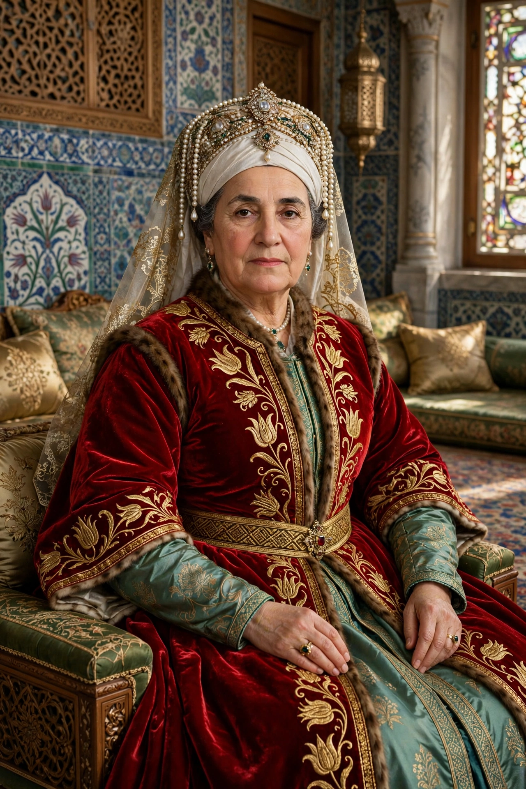

| Sultanate of Women | |
|---|---|
| Turkish | Kadınlar Saltanatı |
| Period | c. 1534 – 1683 |
| Key figures | Hürrem Sultan; Nurbanu Sultan; Safiye Sultan; Kösem Sultan; Turhan Sultan |
| Institution | Imperial Harem; office of Valide Sultan |
The Sultanate of Women (Turkish: Kadınlar Saltanatı) is the name given by historians to the period of roughly a century and a half in the Ottoman Empire during which the women of the imperial harem — above all the sultan's mother, the Valide Sultan — exercised extraordinary political influence, at times effectively ruling the empire as regents.

The era is usually dated from the rise of Hürrem Sultan (Roxelana), the Ruthenian-born favourite whom Suleiman the Magnificent controversially freed and married in the 1530s. From within the harem she corresponded with foreign rulers, endowed great building complexes, and manoeuvred in succession politics. Her successors institutionalised the power: the Valide Sultan received the empire's largest stipend, controlled vast waqf revenues, and headed a court parallel to the sultan's own.
Kösem Sultan, regent for her son Murad IV and grandson Mehmed IV, was the period's most powerful figure until her murder in 1651 in a harem factional struggle won by her rival Turhan Sultan. Turhan, as regent, made the fateful appointment of Köprülü Mehmed Pasha as grand vizier in 1656 — restoring strong vizierial government and, conventionally, closing the Sultanate of Women, though imperial women remained major patrons and political actors long after, into the era of the empire's final defeat at Vienna in 1683 and beyond.
Older historians treated the period as a symptom of "decline"; modern scholarship, following Leslie Peirce's The Imperial Harem, reads it as a structural feature of a dynastic system in which sultans reigned from the palace and reproduction politics made the queen mother a pillar of sovereignty.
Hürrem Sultan · Kösem Sultan · Ottoman Empire · Valide sultan